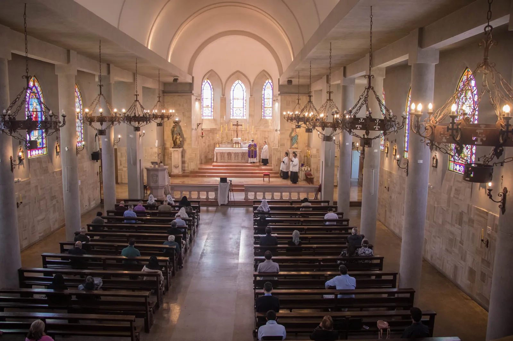

Cómo llegar
Talavera de la Reina 430,Las Condes, Santiago de Chile.
Iglesia del Corazón Inmaculado y Doloroso de María. Horarios habituales, dirección e información para preparar la visita.

Domingo: 9:00, 11:00 (cantada) y 19:00.
Lunes: 19:00.
Martes a viernes: 7:15 y 19:00.
Sábado: 7:15 y 12:00.
Los horarios pueden cambiar por fiestas y actividades. Revise la semana vigente antes de salir.
Ver el calendario semanalEncuentre direcciones y contactos de Viña del Mar, La Serena y Temuco.
Ver todos los centros